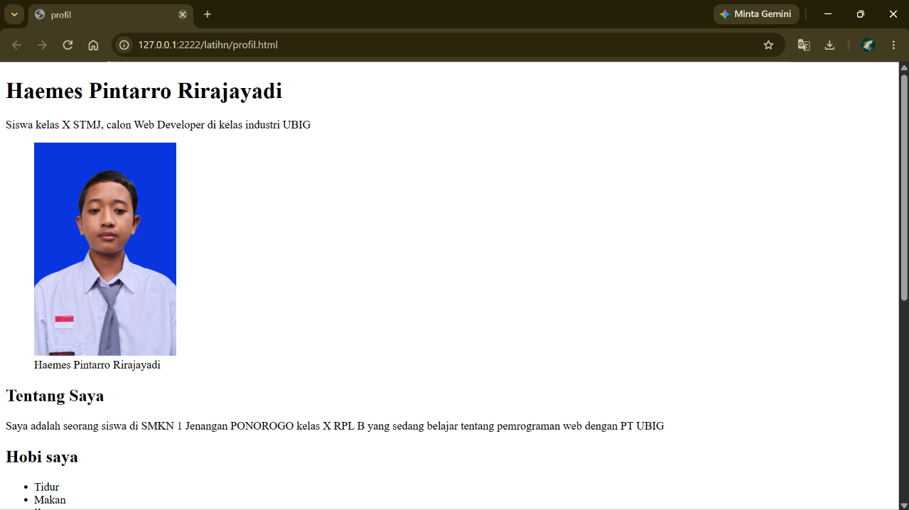
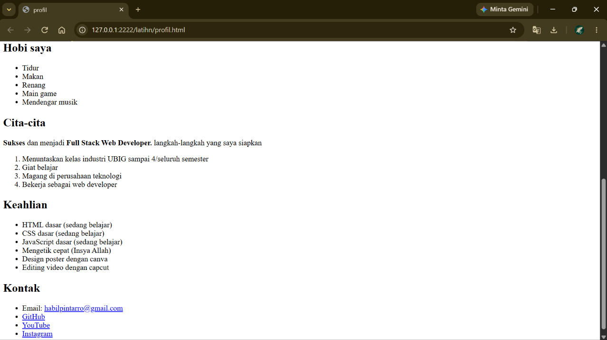
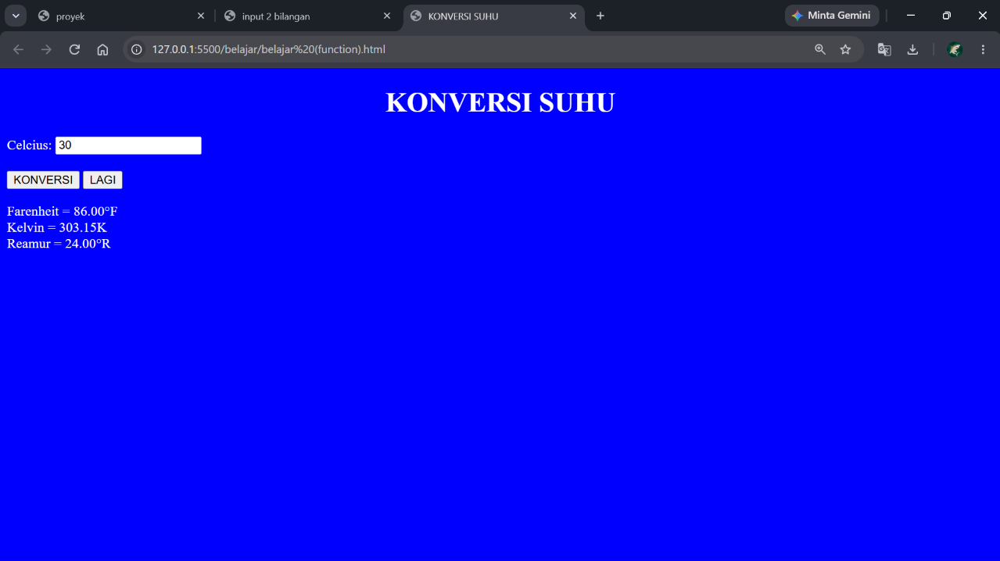
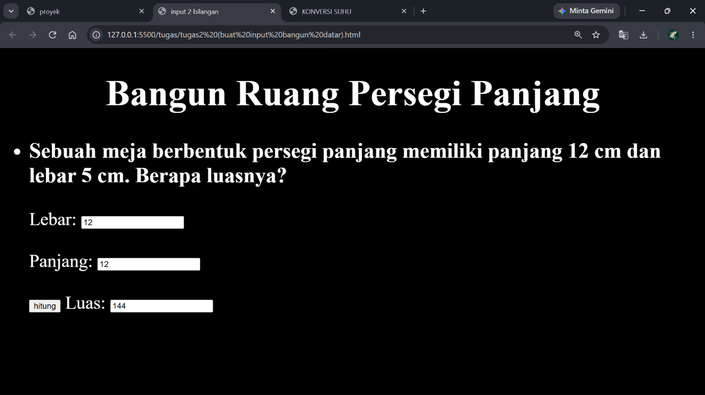

Halaman Profil Pertama(UBIG)


Halaman web pertama saya dikelas UBIG, berisi perkenalan, foto, hobi, cita- cita, keahlian, dan kontak. Dibuat dengan HTML dasar di Minggu 01.
Siswa kelas X STMJ, calon Web Developer di kelas industri UBIG
Beberapa proyek yang saya buat


Halaman web pertama saya dikelas UBIG, berisi perkenalan, foto, hobi, cita- cita, keahlian, dan kontak. Dibuat dengan HTML dasar di Minggu 01.

Halaman web yang saya buat untuk mengonversikan suhu, dari Celcius ke Kelvin dan Farenheit. Saya juga memberikan sedikit pewarnaan pada web ini menggunakan CSS.

Halaman web yang saya buat untuk menghitung luas dan keliling bangun ruang persegi panjang. Saya juga memberikan sedikit pewarnaan pada web ini menggunakan CSS.
Semua proyek di halaman ini dibuat dengan HTML. Tampilannya akan saya rapikan dengan CSS mulai Minggu 03.